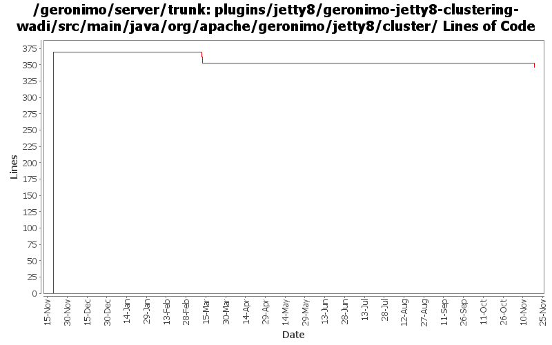

[root]/plugins/jetty8/geronimo-jetty8-clustering-wadi/src/main/java/org/apache/geronimo/jetty8/cluster
 wadi
(2 files, 145 lines)
wadi
(2 files, 145 lines)

| Author | Changes | Lines of Code | Lines per Change |
|---|---|---|---|
| Totals | 8 (100.0%) | 380 (100.0%) | 47.5 |
| djencks | 4 (50.0%) | 369 (97.1%) | 92.2 |
| xuhaihong | 1 (12.5%) | 5 (1.3%) | 5.0 |
| kevan | 2 (25.0%) | 4 (1.1%) | 2.0 |
| rickmcguire | 1 (12.5%) | 2 (0.5%) | 2.0 |
fix build breakage caused by jetty8 version change
2 lines of code changed in 1 file:
Update integration codes according to the last codes of Jetty8
5 lines of code changed in 1 file:
GERONIMO-5182 Looks like I messed up on my revert as well... Anyway with these changes, Jetty builds for me. Need to look more closely at the stats and handler changes. So, won't close Jira
0 lines of code changed in 1 file:
didn't meant to commit these files
4 lines of code changed in 1 file:
rename jetty7 to jetty8
369 lines of code changed in 4 files: